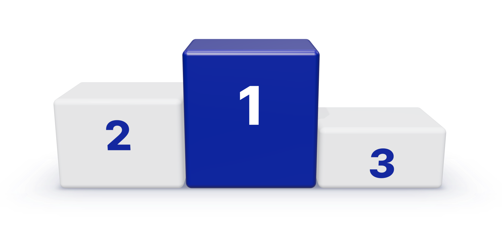

삼성벤처투자 AI 공모전
출장 보고서를 만들어 주는 SKILL을 찾습니다

30만원
50만원
10만원
평소 출장 보고서를 쓰던 방식을 Claude 스킬로 만들어 제출해 주세요.
수상작은 AX TF가 보완해 전사에 배포합니다.
주제
컨퍼런스·출장 보고서를 만들어 주는 SKILL
평가 기준
1시사점
회사·그룹과의 연계성, 영향도, 글로벌 트렌드 등을 적절하게 도출하는가
2가독성
내용에 대한 Summary 등을 적절하게 제시하여 논리적으로 보기 편한가
3정확성
회의록과 자료의 내용을 빠짐없이 사실대로 반영하는가
4범용성
다른 출장과 행사 자료에도 같은 품질로 적용되는가
1. 스킬 만들기
두 방법 중 편한 쪽을 골라 아래 문장을 Claude에게 그대로 보냅니다.
보고서를 쓰던 채팅이 있다면
컨퍼런스_회의록.docx
회의록 정리해서 출장 보고서 만들어 줘
지금까지 이 채팅에서 보고서를 작성한 방식을 앞으로도 쓸 수 있도록 스킬로 만들어 줘
Sonnet 5
새 채팅에 지난 보고서를 첨부한다면
지난_출장보고서.docx
출장 중 작성한 회의록이나 메모를 넣으면 첨부한 보고서와 같은 형식의 출장 보고서가 완성되도록 스킬로 만들어 줘
Sonnet 5
2. 써 보기
실제 회의록을 넣어 보고 고칠 내용은 같은 채팅에서 요청합니다.
10월_컨퍼런스_회의록.docx
/trip-report 이 회의록으로 출장 보고서 만들어 줘
trip-report 스킬 사용
출장 보고서를 작성했습니다.
요약을 맨 앞에 두도록 스킬을 고쳐 줘
요약을 첫 장에 두도록 스킬을 수정했습니다.
Claude에게 메시지 보내기
Sonnet 5
3. 제출하기
완성된 스킬을 압축 파일로 내려받아 이메일로 보냅니다.
trip-report
SKILL.md지침
references/report-format.md양식
references/example.md예시
- 제출
- 김대현 인턴
- 기한
- 2026년 10월 30일 (금)
- 문의
- 양찬우, 방영오, 권용민, 홍의정, 신동헌
제출 방법에 질문이 있다면
김대현 인턴에게 메신저 부탁드립니다.